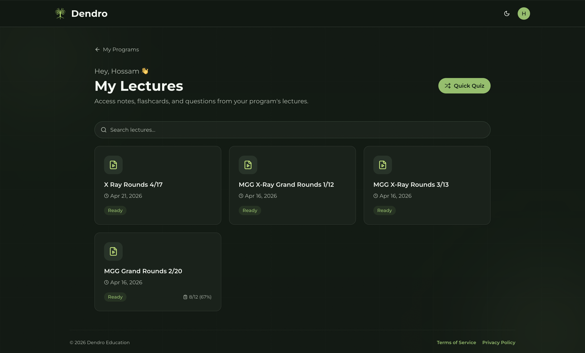

Upload your program's existing lecture recordings and Dendro automatically generates structured notes, flashcards, and board-style practice questions — so trainees can keep learning long after the session ends. No extra work for faculty. No new curriculum to build.

Upload the lecture recordings your program already makes — no new workflows, no extra effort from faculty.
Our models extract key concepts and generate summaries, flashcards, and board-style questions — all curriculum-specific.
Residents review between shifts or before boards. Spaced repetition resurfaces what they're forgetting before it matters clinically.
Administrators get a live view of engagement and retention — data you can bring to board reviews and accreditation.
Built for the realities of medical training — not a generic EdTech tool retrofitted for clinical education.
Summaries, flashcards, and practice questions generated directly from your curriculum content.
Track engagement, mastery, and knowledge gaps across your cohort — in real time.
Proven cognitive science built in — the system resurfaces content before trainees forget it.
Validated by randomized research — not just EdTech claims. Real data showing superior retention vs. standard learning.
Manage multiple residency programs or departments from a single administrator dashboard.
No curriculum redesign required. Upload what you already have and Dendro does the rest.
Your attendings taught it.
Your residents forgot it.
Not anymore.
Dendro extends every lecture into lasting knowledge — automatically.
Standardize lecture-based training across departments and locations. Give clinical leadership visibility into learning outcomes across your entire workforce.
Turn your lecture library into a structured learning system. Help residents retain what they learned long after the session — and show it with ACGME milestone data.
Complement your curriculum with AI-powered retrieval practice. Help students move from passive attendance to active mastery.
I reviewed the lectures, summaries, and questions and was genuinely impressed by the succinct yet comprehensive capture of key clinical lessons and pearls. As someone who delivers dozens of talks each year, I've often wondered how much truly sticks — Dendro addresses that challenge directly. It transforms a one-time lecture into a structured, reusable learning experience for trainees. This is exactly the kind of innovation modern medical education needs.
We work directly with residency program directors and health system administrators. Reach out and we'll show you what Dendro can do for your institution.